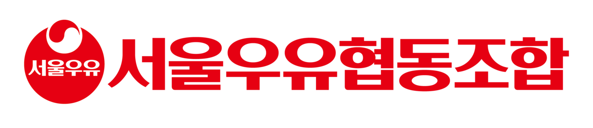
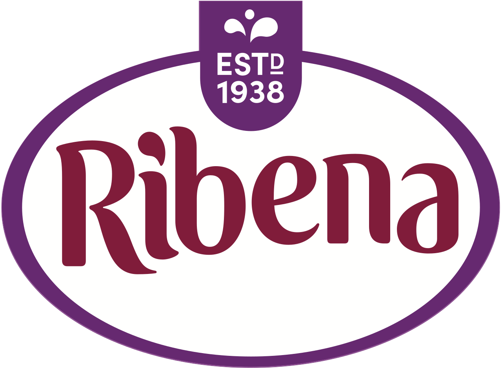

홈 > 브랜드 매거진 > 서울우유
서울우유 Seoul Milk
서울우유협동조합은 1937년 출범한 한국 최대 규모의 유가공 협동조합이다. 낙농가가 직접 출자해 조합원으로 참여하는 생산자 협동조합 구조를 토대로 흰우유를 중심으로 가공유, 발효유, 치즈, 버터, 분유 등을 생산한다. 흰우유 부문에서 오랜 기간 국내 시장 점유율 1위를 지켜 왔으며, 제조일자 표기와 원유 등급제로 품질 신뢰를 쌓아 온 대표 유업 브랜드다.
산업 분야 식음료 · 공개 등급 자료 기반 · 브랜드 평가 4.1 ★

한눈에 보는 브랜드
서울우유협동조합은 1937년 출범한 한국 최대 규모의 유가공 협동조합이다. 낙농가가 직접 출자해 조합원으로 참여하는 생산자 협동조합 구조를 토대로 흰우유를 중심으로 가공유, 발효유, 치즈, 버터, 분유 등을 생산한다.
흰우유 부문에서 오랜 기간 국내 시장 점유율 1위를 지켜 왔으며, 제조일자 표기와 원유 등급제로 품질 신뢰를 쌓아 온 대표 유업 브랜드다.
브랜드 관점
서울우유의 정체성은 낙농가가 출자해 운영하는 생산자 협동조합 구조에 있다. 일정 규모 이상 젖소를 기르는 낙농가가 출자금을 내고 조합원이 되며, 조합원 수는 약 1600명 규모다.
흰우유 시장에서 점유율 1위를 이어 왔고, 2009년부터 흰우유에 제조일자를 추가 표기하며 신선도 마케팅을 강화했다. 2016년에는 체세포수·세균수 최고 등급 원유만 사용한 나100퍼센트 우유를 선보여 원유 등급을 품질 경쟁의 축으로 끌어올렸다.
시작과 성장
기원은 1937년으로 거슬러 올라간다. 그해 청량리 일대 낙농가를 중심으로 조합이 조직되었고, 같은 해 경성우유동업조합이 창립되었다.
광복 직후 일본인 조합원이 철수하면서 서울우유동업조합으로 명칭을 바꾸었고, 1961년 농업협동조합법 제정을 계기로 1962년 서울우유협동조합으로 다시 개편되었다. 이후 서울 중랑천 인근에 터를 잡고 낙농가 조합원이 생산한 원유를 공동으로 집유·가공하는 협동조합 체계를 갖추며 한국 유가공 산업의 토대를 닦았다.
브랜드 아이덴티티
서울우유는 신선함과 품질 신뢰를 핵심 가치로 내세운다. 제조일자 표기와 원유 등급 공개를 통해 신선도를 소비자가 직접 확인하도록 했고, 흰우유 본연에 집중하는 정통 유업 이미지를 구축했다.
낙농가와 소비자를 잇는 협동조합이라는 정체성이 브랜드 신뢰의 바탕을 이룬다.
제품과 서비스
제품군은 흰우유를 중심으로 한다. 일반 흰우유와 나100퍼센트 등 프리미엄 흰우유 외에 딸기·바나나·초코 등 가공유, 비요뜨를 비롯한 발효유, 자연치즈와 가공치즈, 버터, 연유, 분유, 커피 음료까지 폭넓은 유가공 제품을 생산한다.
흰우유가 매출의 중심축을 이룬다.
현재 상태
서울우유협동조합은 2020년 양주에 대규모 유가공 신공장을 가동하며 생산 기반을 확충했고, 연 매출 2조원대 규모의 국내 1위 유업으로 자리하고 있다. 출생아 감소와 흰우유 소비 둔화 속에서 치즈·발효유 등 가공 부문 확대를 추진하고 있다.
BI/CI 변천사
자주 묻는 질문
서울우유의 브랜드 아이덴티티는 무엇인가요?
서울우유는 신선함과 품질 신뢰를 핵심 가치로 내세운다.
서울우유의 대표 제품은 무엇인가요?
제품군은 흰우유를 중심으로 한다.
서울우유는 현재 어떤 상태인가요?
서울우유협동조합은 2020년 양주에 대규모 유가공 신공장을 가동하며 생산 기반을 확충했고, 연 매출 2조원대 규모의 국내 1위 유업으로 자리하고 있다.
서울우유의 공식 웹사이트는 어디인가요?
서울우유의 공식 웹사이트는 https://www.seoulmilk.co.kr 입니다.
함께 읽을 브랜드
 식음료 · 자료 기반메가엠지씨커피(Mega MGC Coffee)
식음료 · 자료 기반메가엠지씨커피(Mega MGC Coffee)메가엠지씨커피는 합리적 가격과 대용량을 앞세운 한국의 저가 커피 프랜차이즈다. 2015년 첫 매장을 연 뒤 빠른 가맹 확장으로 국내 최대급 매장 수를 갖춘 브랜드로...
 식음료 · 자료 기반오설록(OSULLOC)
식음료 · 자료 기반오설록(OSULLOC)오설록은 아모레퍼시픽그룹이 운영하는 한국의 프리미엄 차 브랜드다. 제주 다원에서 재배한 녹차와 발효차를 중심으로, 잎차와 티백, 디저트, 카페 공간까지 아우르는 차...
 식음료 · 매거진 완성앱솔루트(ABSOLUT)
식음료 · 매거진 완성앱솔루트(ABSOLUT)앱솔루트는 보드카 병 하나를 광고와 예술의 반복 가능한 캔버스로 만든 브랜드다. 제품 형태의 일관성을 유지하면서도 캠페인마다 다른 문화적 해석을 입혀, 단순한 병을...
네슬레(Nestlé)는 스위스 브베에 본사를 둔 세계 최대 규모의 식음료 다국적 기업이다.
Be
Bezi
식음료 · 편집 검수BeziBezi는 2024년에 기록된 Food Brands 계열의 브랜드 아이덴티티 사례입니다. Red Antler가 아이덴티티 작업의 디자이너로 기록되어 있습니다. 공개...

식음료 · 편집 검수Ribena리베나는 블랙커런트(Ribes nigrum)를 원료로 한 영국의 대표적 과일 농축 음료 브랜드다. 이름 자체가 블랙커런트의 학명에서 유래했으며, 진한 보라빛 베리와...
Te
Tenzing
식음료 · 편집 검수Tenzing텐징은 2016년 1월 영국에서 출시된 천연 에너지 드링크 브랜드다. 창업자 후이브 판 보컬은 레드불에서 8년간 영국·유럽 마케팅 디렉터로 일한 뒤 독립해, 인공 첨...
 식음료 · 자료 기반하이트진로(HiteJinro)
식음료 · 자료 기반하이트진로(HiteJinro)하이트진로(HiteJinro)는 참이슬 소주와 하이트·테라 맥주로 유명한 한국의 대표 주류 기업으로, 그 기원은 1924년으로 거슬러 올라간다.